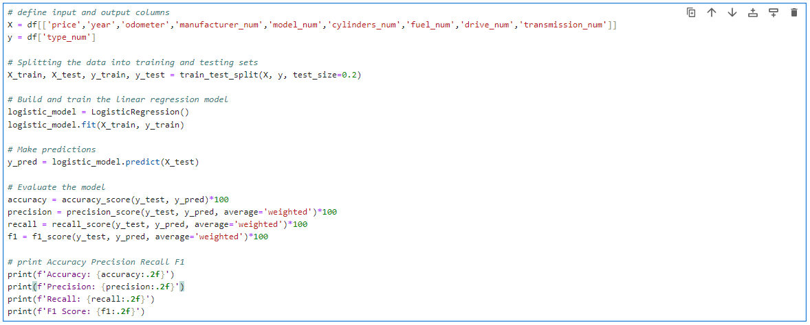
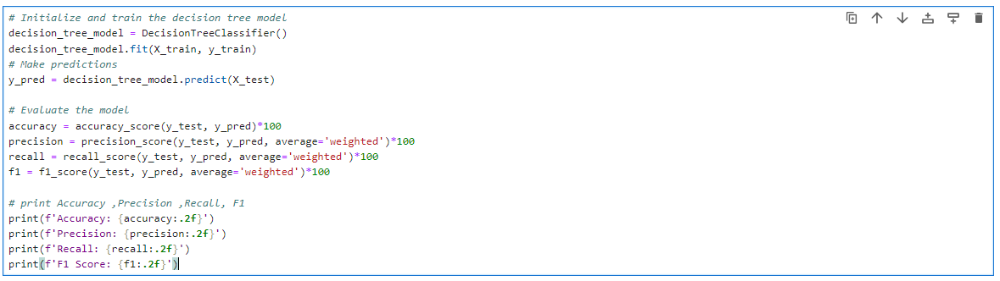
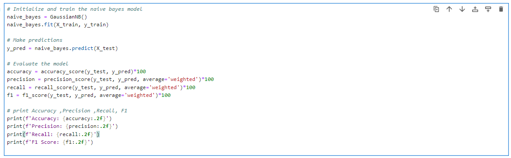
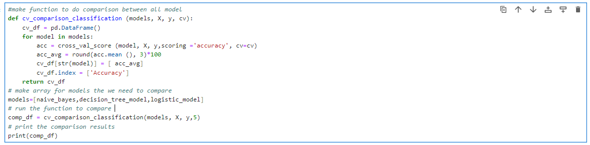

On this page, we will build a machine learning model capable of classifying different types of vehicles based on their features. We will utilize a logistic regression model, a decision tree model, and a Naive Bayes model, compare their results, and make a comparison between them.
In this section, we will build a logistic regression model, train it, and evaluate the model's performance by obtaining the accuracy, precision, recall, and F1 score values.
| Accuracy | Precision | Recall | F1 Score |
|---|---|---|---|
| 36.76 | 27.16 | 36.76 | 29.60 |
In this section, we will build a Decision tree model, train it, and evaluate the model's performance by obtaining the accuracy, precision, recall, and F1 score values.
| Accuracy | Precision | Recall | F1 Score |
|---|---|---|---|
| 72.68 | 72.91 | 72.68 | 72.79 |
In this section, we will build a Naive Bayes model, train it, and evaluate the model's performance by obtaining the accuracy, precision, recall, and F1 score values.
| Accuracy | Precision | Recall | F1 Score |
|---|---|---|---|
| 37.96 | 27.84 | 37.96 | 29.79 |
In this section, we will create a function to compare three models by training them on all dataset rows and displaying the results.
| # | LogisticRegression() | DecisionTreeClassifier() | GaussianNB() |
|---|---|---|---|
| Accuracy | 36.8 | 72.2 | 38.2 |